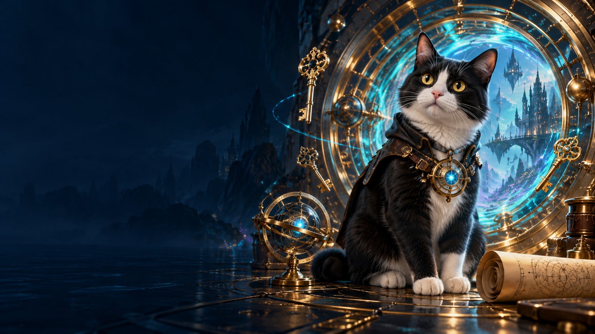

Розділ 02 · Місія 2.5
Контроль цілісності
Місія готується. Незабаром тут з’являться матеріали та практичні завдання.
Повернутися до тем курсу
Місія готується. Незабаром тут з’являться матеріали та практичні завдання.
Повернутися до тем курсу